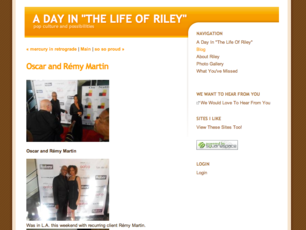

Press
-
Black Enterprise
April 2013 -
Black Enterprise
April 2013 -
Your Black World
April 2013 -
Carlton Jordan
March 2013 -
The Jasmine Brand
March 2013 -
Black Urban Times
March 2013 -
Black Street On-line
March 2013 -
JET
March 2013 -
BlackFilm.com
March 2013 -
All Africa
March 2013 -
Nat Burnz
March 2013 NewYorkTimes.com
March 2013
E Wallstreeter
March 2013- 
The Life Of Riley
February 2013 
IB Social
February 2013The Industry Cosign
February 2013-
Vain Mag
February 2013 -
Essence Magazine
April 2012
-
HuffingtonPost.com
April 2012
-
BAM 150th Anniversary Gala
April 2012
-
BlackFilm.com
March 2012
-
Daughters Of The Dust 20th Anniversary
March 2012
-
TheBrooklynInk.com
February 2012

Estelle Private Birthday Dinner
January 2012
-
Essence.com
December 2011 -
NewYorkTimes.com
December 2011 -
AOL’s Bed-Stuy Patch
December 2011 -
BET's Black Girls Rock Awards
October 2011 -
InHerShoes.com
October 2010
-
Singersroom.com
September 2010